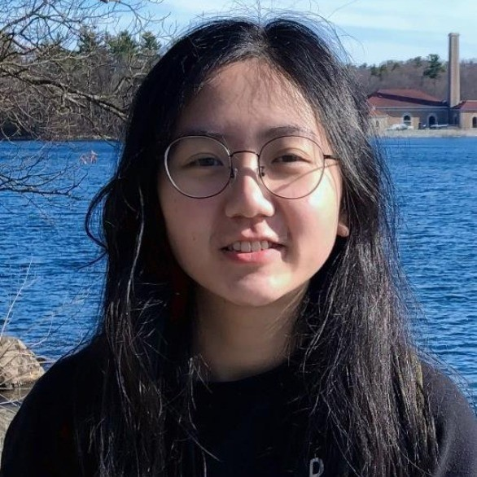

About Me
Hi, I'm Nihang Fu, a fourth-year PhD student in Computer Science at the University of South Carolina (Columbia, SC, USA) where I conduct research in the Machine Learning and Evolution Laboratory under the supervision of Dr. Jianjun Hu. I obtained my M.S. degree in Computer Engineering from Northeastern University (Boston, MA, USA), where I worked in the Augmented Cognition Laboratory. Before that, I received my B.S. degree in Electrical Engineering and Automation from Chongqing Jiaotong University (Chongqing, China). Currently, my research focuses on applying deep learning to materials science.